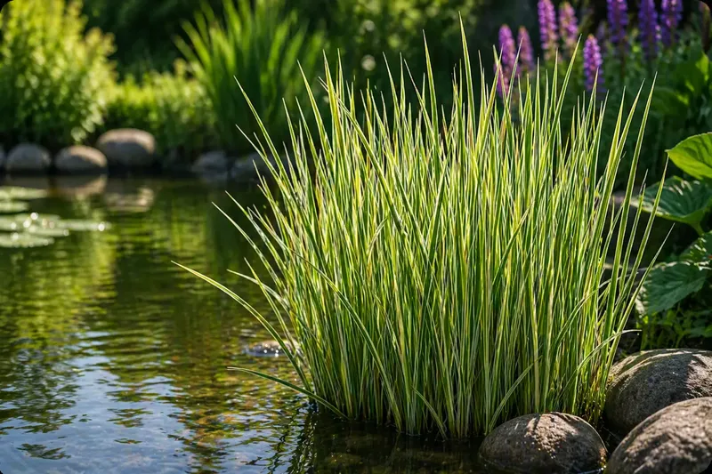

Растения для пруда
Аир вариегатный (вариегата)
Цена и наличие
- C120,25 BYN / шт.В наличии
Данные на 23.11.2026.
Характеристики
- Преимущества
- Декоративные полосатые листья, устойчивость к переувлажнению, отлично подходит для прибрежных зон прудов и водоёмов
- Период цветения
- Май-июль
- Размер листьев
- До 80–100 см в длину; ширина — около 1–2 см
- Размер корневища
- До 2–3 см в диаметре, может разрастаться до 1 м и более в длину со временем
Описание
Аир вариегатный – это многолетнее водное растение, которое идеально подходит для украшения прудов и водоемов.
Аир вариегатный (Acorus calamus ‘Variegatus’) — это декоративное корневищное многолетнее растение из семейства Аирные, отличающееся выразительной пестролистной листвой и устойчивостью к переувлажнённой почве. В природе аир встречается по берегам рек, озёр и болотистых участков Евразии, а в декоративном садоводстве используется как эффектный акцент в прибрежных зонах водоёмов и в сырых тенистых уголках сада. Это растение образует плотные вертикальные куртины высотой до одного метра, состоящие из длинных, линейных, жёстких листьев с кремовыми или светло-жёлтыми продольными полосами. Листва сохраняет декоративность с весны до поздней осени, не разваливается и устойчива к непогоде. Цветение наступает в мае–июле, но декоративной ценности не представляет: цветки мелкие, зеленовато-жёлтые, собраны в плотные, немного отклонённые початки, почти незаметные среди листвы. Все части растения источают характерный пряный, камфорный аромат, особенно ярко выраженный у корневищ. Аир вариегатный предпочитает влажную или даже заболоченную почву, способен расти как на берегу водоёмов, так и на мелководье, частично погружённым в воду. Наилучшие декоративные качества проявляет на солнечных участках, но может переносить полутень. Он морозостоек, не требует укрытия на зиму в средней полосе России и легко переносит температурные понижения до –30 °C. Благодаря своей устойчивости, декоративности и способности стабилизировать переувлажнённую почву, аир вариегатный активно используется в ландшафтном дизайне для оформления прудов, ручьёв, дождевых садов и влажных рабаток. Он хорошо сочетается с ирисами болотными, хостой, рогозом и осоками, создавая выразительные природные композиции.